SPOTS
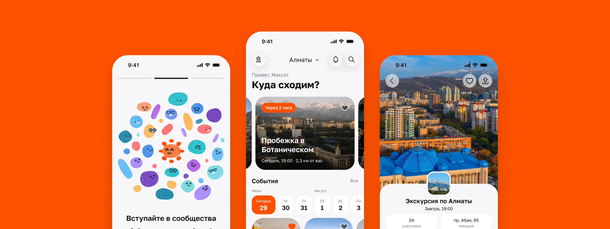
Коротко о кейсе
Проблема
Анонсы разбросаны по Instagram, Telegram-каналам и закрытым чатам. Поиск отнимает столько времени, что человек остаётся дома. Организаторы тратят часы на сбор «плюсиков» и напоминания.
Решение
Одно приложение для городских событий и постоянных сообществ. Главный экран сразу предлагает, куда пойти, а карточка показывает время, место, цену и участников.
Результат
Прототип — 33 экрана: от первого запуска с онбордингом и входом до записи на событие или вступления в сообщество.
О проекте
Spots — мобильное приложение для поиска городских событий и сообществ по интересам. Это мой итоговый проект на курсе продуктового дизайна Tech Orda.
Над проектом я работал один с апреля по сентябрь 2026 года: исследовал рынок и аудиторию, провёл интервью, спроектировал сценарии, собрал прототип и UI-kit, провёл usability-тестирование с реальными респондентами и описал метрики продукта.
Контекст
Локального досуга в городе много, но его трудно найти. Путь пользователя разорван между Instagram-афишами, Telegram-каналами и закрытыми чатами.
Долгий поиск. Чтобы собрать варианты, нужно пролистать десятки источников. Пока ищешь, желание куда-то идти пропадает.
Социальный барьер. Графики друзей не совпадают, а сформировавшиеся компании сидят в закрытых чатах. Идти одному к незнакомым людям некомфортно.
Организационный хаос. Встречи координируют в мессенджерах: организатор вручную считает «плюсики», а адрес и время теряются в переписке.
Цель и задачи
Цель — помочь людям легко находить городские события и компанию по интересам. Для этого Spots объединяет разовые события и постоянные сообщества в одном приложении.
- Исследовать рынок и целевую аудиторию.
- Спроектировать путь пользователя от онбординга до записи на событие и вступления в сообщество.
- Собрать интерактивный прототип и провести usability-тест.
- Разработать UI-kit и финальные макеты.
Исследование рынка
Я разобрал 11 прямых и косвенных конкурентов. Прямые: Telegram- и WhatsApp-группы, Meetup, Luma, Timeleft, TABLER, Radiate и Plots. Косвенные: Ticketon, Sxodim, Strava и Tinder.
Четыре главных — Meetup, Luma, Ticketon и Telegram-группы — сравнил по популярности в СНГ, онбордингу, навигации и ключевым функциям. Сценарии Meetup и Luma прошёл по шагам, экран за экраном.
Meetup
- Популярность
- Высокая в мире, но в СНГ аудитория узкая: в основном IT, бизнес, экспаты
- Общее впечатление от UX
- Перегруженный и местами устаревший
- Онбординг
- Многошаговый. Заставляет выбрать десятки тегов, прежде чем пустит внутрь
- Навигация
- Не очень интуитивная. Много вкладок, категорий и подкатегорий — можно запутаться
- Ключевые функции
- Поиск событий, сообщества, обсуждения и чат
- Интерактивность
- Базовые механики: карта с поиском событий, зум и скролл. Интерфейс часто ощущается тяжёлым
- Минусы
- Создание сообщества платное
Luma
- Популярность
- Средняя, особенно в зарубежной IT- и креативной среде
- Общее впечатление от UX
- Минималистичный, эстетичный и современный
- Онбординг
- Быстрый. Вход в один клик, сразу можно создать событие или смотреть ленту
- Навигация
- Простая и интуитивная
- Ключевые функции
- Поиск событий по городам, сообщества (календари), чат
- Интерактивность
- Плавная смена состояний, удобные всплывающие окна, аккуратные анимации
- Минусы
- Упор на веб-версию: создать календарь сообщества можно только в ней
Ticketon
- Популярность
- Высокая, но только в нише платных развлечений
- Общее впечатление от UX
- Привычный, понятный
- Онбординг
- Привычный: ввести номер, почту и т. д. Ничего особенного
- Навигация
- Каталог — понятная структура
- Ключевые функции
- Поиск событий, покупка билетов, выбор мест на схеме зала, оплата
- Интерактивность
- Масштабируемые схемы залов, быстрый отклик без анимаций
- Минусы
- Обычный пользователь не может создать событие. Нет общения
Группы в Telegram
- Популярность
- Высокая
- Общее впечатление от UX
- Привычно, но часто перегруженно: всё происходит на одном экране
- Онбординг
- Зависит от группы: от простого добавления в чат до закреплённых правил и приветственных ботов
- Навигация
- Сплошная лента. Важное быстро уезжает вверх, спасают только закреплённые сообщения
- Ключевые функции
- Общение, опросы, реакции
- Интерактивность
- Отзывчивый интерфейс: свайп для ответа, долгое нажатие для реакций, анимации стикеров
- Минусы
- Детали встречи теряются в переписке, участников считают по «+», нет напоминаний, новые группы по интересам не найти
Слабые места конкурентов
Meetup перегружен, а онбординг заставляет выбрать десятки тегов до входа. Luma удобна, но сообщество можно создать только в веб-версии. В Ticketon нет общения, и обычный пользователь не может создать событие. В Telegram-группах информация о встрече тонет в переписке, участников считают по «плюсикам», напоминаний нет.
Что взял у конкурентов
- У Meetup — карту с событиями и календарь на странице сообщества.
- У Luma — карту прямо на странице события.
- У Ticketon — горизонтальную ленту дат, чтобы выбрать день в одно касание.
Интервью
Чтобы понять реальный опыт, я провёл три глубинных интервью. Двое респондентов обычно сами собирают людей, третий присоединяется к готовым планам.
- Фариза, 24 года, SMM-специалистка — организатор.
- Игорь, 35 лет, пиарщик — организатор.
- Янис, 27 лет, бэкенд-разработчик — участник.
Вопросы разбил на блоки: как люди проводят и ищут свободное время, путь организатора или участника и проверка главной гипотезы о сообществах.
«Весь день только на поиски уходит, а потом уже и не хочется никуда»
«Приходилось напоминать постоянно о многих вещах (дата, деньги и т. д.). Некоторые читают и игнорят просто»
Инсайты
Из интервью я выделил пять инсайтов и каждый превратил в требование к продукту.
Общий вывод: людям важна предсказуемость. Ценность Spots — снять неопределённость: подсказать, куда пойти, и заранее показать, кто там будет.
Персоны и сценарии
На основе интервью я описал две персоны.
Янис, 27 лет, — искатель. Работает на удалёнке, ему не хватает живого общения. Сам ничего не организует и присоединяется к готовым планам. Боится оказаться в неподходящей компании и бросает поиск, если он затягивается.
Фариза, 24 года, — организатор. Собирает друзей сама, потому что хочет контролировать место и формат. Устала по нескольку раз отвечать на одни и те же вопросы и напоминать о встрече.
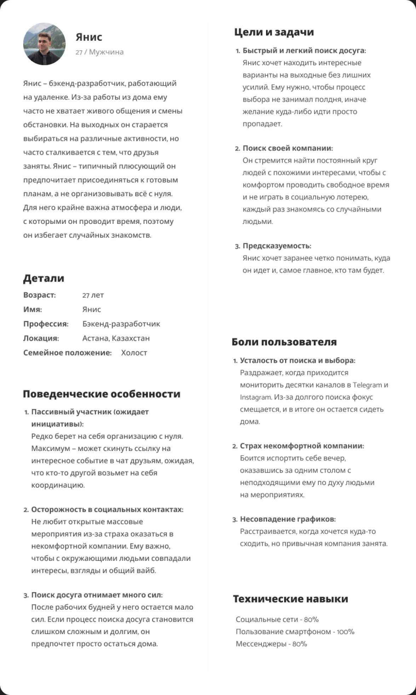
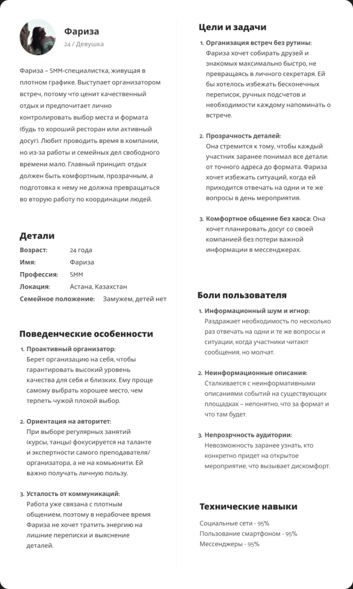
Основной сценарий
Задачи персон я описал в формате user stories и job stories, а затем свёл их в основной сценарий MVP:
«Когда у пользователя выдались свободные выходные, он открывает приложение, находит событие или сообщество через рекомендации или карту, изучает детали и состав участников и присоединяется в одно касание»
В прототип вошли сценарии искателя: запись на событие и вступление в сообщество. Сценарий организатора — создание событий и сообществ — оставил на следующий этап.
Гипотезы
Перед проектированием я сформулировал три гипотезы и проверил их на интервью и usability-тесте.
Люди приходят на события, а остаются в сообществах
События привлекают, но удерживают сообщества: в них складывается постоянная компания. Сообщества оставил и добавил требование — открытые и закрытые.
Людей держит авторитет организатора, а не дружба внутри группы
На настолках и квизах держит компания, на тренировках и мастер-классах — лидер. Поэтому на странице события видны и организатор, и участники.
Пользователи будут путать сообщество и событие
Респонденты сами объясняли разницу без подсказок. Обе сущности оставил, навигацию менять не пришлось.
Пользовательский сценарий
Путь от первого запуска до записи: три экрана онбординга, персонализация, вход и главная. Онбординг и персонализацию можно пропустить. С главной пользователь идёт к событию или сообществу, и каждая ветка заканчивается подтверждением — «Вы участвуете!» или «Вы вступили!».
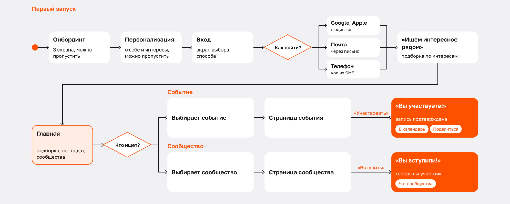
Вайрфреймы
По пути от скетчей к вайрфреймам структура стала проще.
«Споты» → «Сообщества». Понятное слово, к которому пользователи уже привыкли.
«Ты» → «вы». Один тон во всём приложении.
Меньше разделов. Убрал дубли «Споты» и «События» из категорий, добавил «Избранное».
Главная
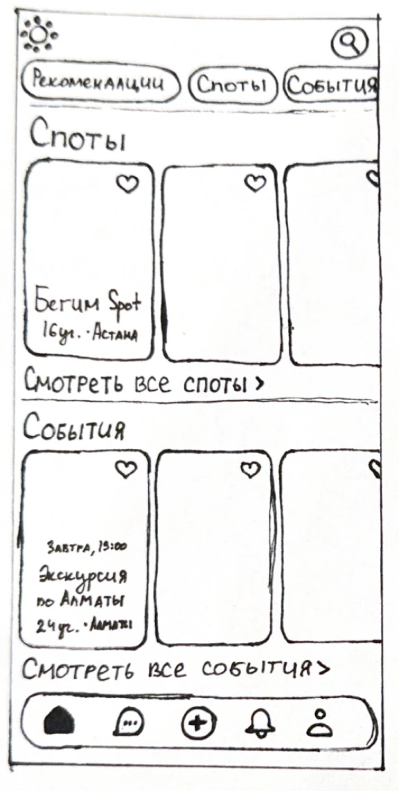
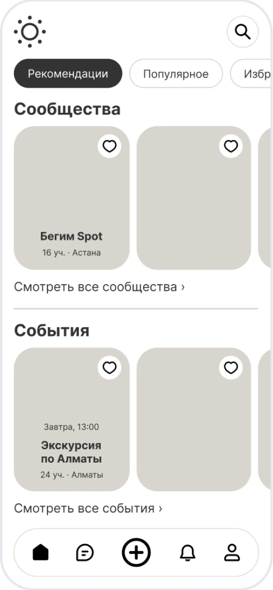
Сообщество
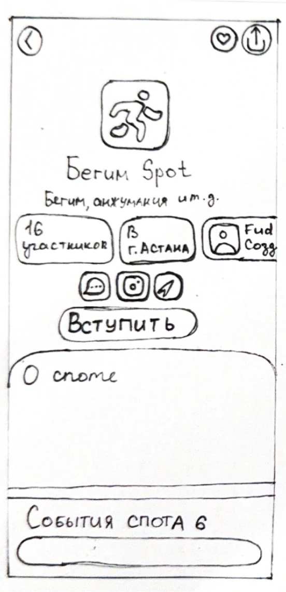
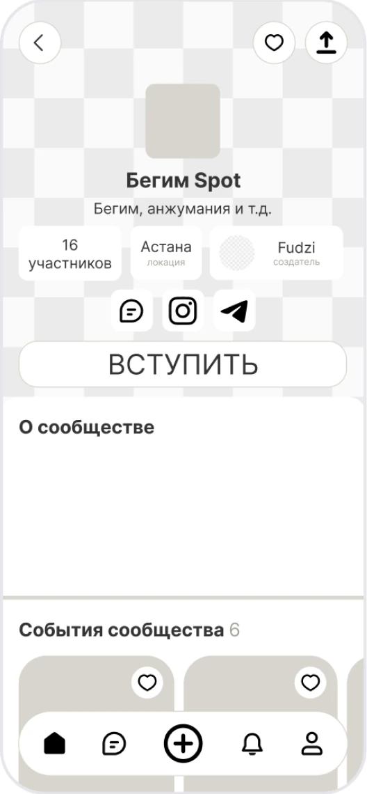
Прототип
Прототип из 33 экранов покрывает два сценария: от первого запуска до записи на событие и до вступления в сообщество. Переходы собраны на Smart Animate, есть состояния нажатия и переключение вкладок.
Usability-тест
Прототип был собран целиком, но со стороны его ещё никто не проходил. Нужно было понять, читается ли структура продукта и доходит ли новичок до записи на событие без подсказок.
Метод
Модерируемый usability-тест по кликабельному прототипу: 3 респондента, 45–60 минут, респондент думает вслух. Опрос не подходил: он ответит «сколько», а нужно было увидеть, где человек тормозит. Глубинное интервью тоже: продукта в руках у людей ещё нет.
Респонденты
20–45 лет, Алматы и Астана, ищут, чем заняться, через Instagram и Telegram. Одна респондентка переехала в город меньше года назад, двое — местные: Темирлан, 24 года, Фариза, 23 года, и Рустам, 31 год.
Сценарии
Пять сценариев: первый запуск, первое впечатление от главной, запись на событие, поиск сообщества и объяснение разницы между сообществом и событием. Для каждого заранее определил, что считается провалом: например, человек искал сообщество, а записался на событие.
Все три респондента прошли все пять сценариев.
Что показал тест
Главный вывод: разницу между сообществом и событием считывают без подсказок, структуру менять не нужно. Работать надо над видимостью участников и быстрым доступом к тому, что происходит рядом.
Участники
Двое из трёх сами, без вопроса модератора, заметили одно и то же: цифра участников есть, а людей за ней не видно.
«Для меня всегда важно понимать, какой вайб у людей, посещающих мероприятие»
Решение: экран участников с аватарками и списком тех, кто идёт, отметка присутствия после события и рейтинг посещаемости в профиле.
Дата на карточке
При быстром скролле дата теряется среди других данных карточки.
«Когда быстро листаешь ленту, хочется сразу цепляться взглядом — это сегодня вечером или вообще через месяц?»
Решение: дату вынес в отдельную таблетку «Сегодня» / «Завтра», точное время — второй строкой.
Кнопка «+» в таббаре
Двое из трёх пришли искать, а не создавать. Центр таббара занимала кнопка создания, которая нужна только организаторам.
«Плюсик на панели в самой середине не очень актуален именно для меня — как для человека, который пришёл искать событие или сообщество, а не создавать»
Решение: карту уже вынес на главную. Следующий шаг — перенести создание в профиль, а центр таббара отдать карте ближайших событий.
Что изменил после теста
- Вместо счётчика участников — полный список: кто идёт и сколько раз уже ходил.
- Дата на карточке — таблетка «Сегодня» / «Завтра».
- На главной — горизонтальная лента актуальных событий и лента дат.
- Карта доступна прямо с главной.
- Обновил онбординг.
Следующим шагом будет раздел «Мои планы» с сохранёнными и предстоящими событиями.
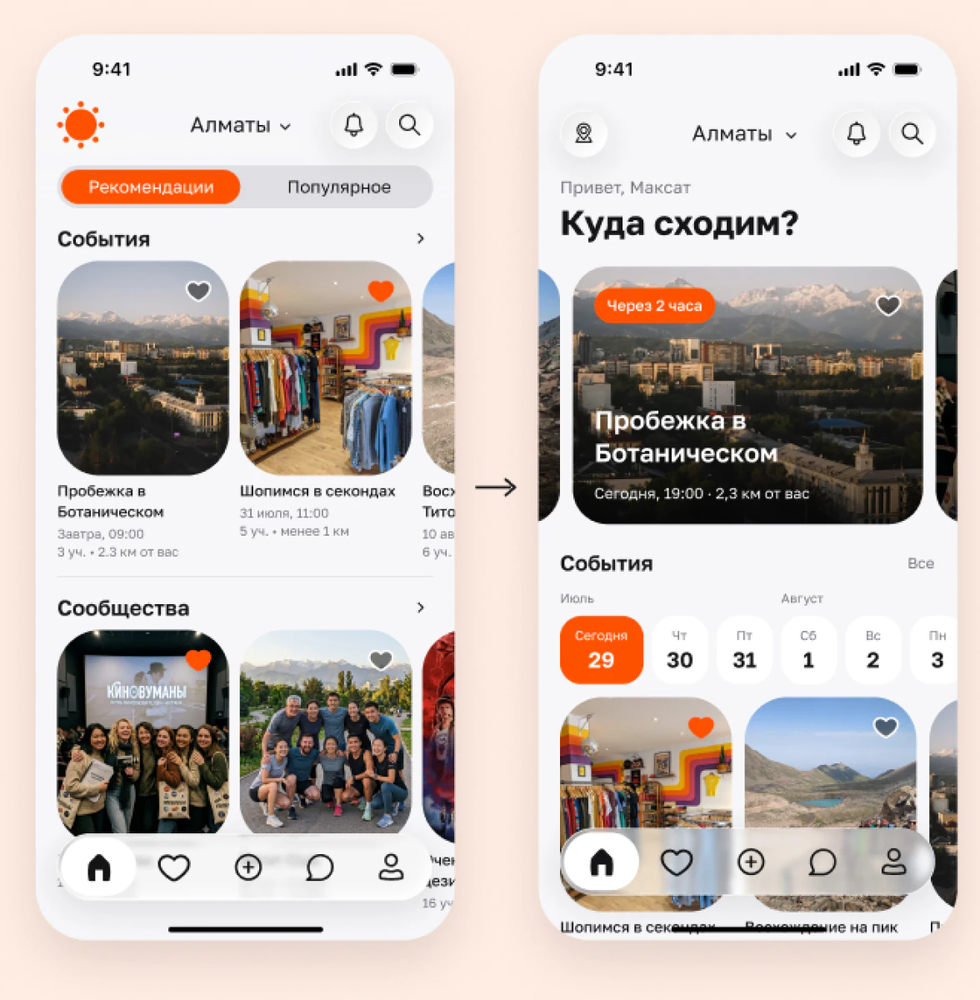
Подборка актуальных событий и сообществ
Готовый вариант вместо поиска
Карта в лёгкой доступности
Просили, чтобы карта была под рукой сразу на главной
Лента дат на главной
Горизонтальный барабан с датами — до событий на нужный день в один тап
UI-kit
Визуальный язык должен давать ощущение принадлежности и доверия, поэтому стиль тёплый и дружелюбный: оранжевый акцент #FF5100, светлые нейтральные фоны и шрифт Golos Text.
Цвета заведены семантическими переменными — bg/brand, bg/accent, text/default и другими. В типографике 6 уровней, компоненты собраны в отдельную библиотеку.
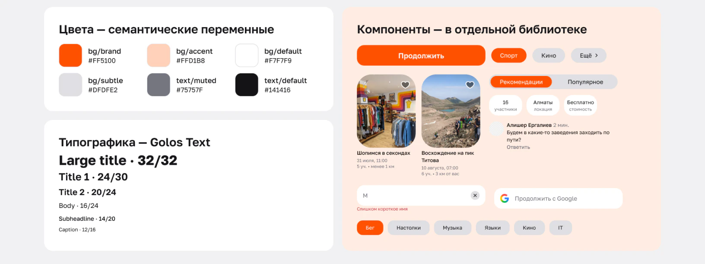
Итоговый дизайн
Онбординг, выбор интересов, главная с подборкой и лентой дат, список сообществ и страница события.
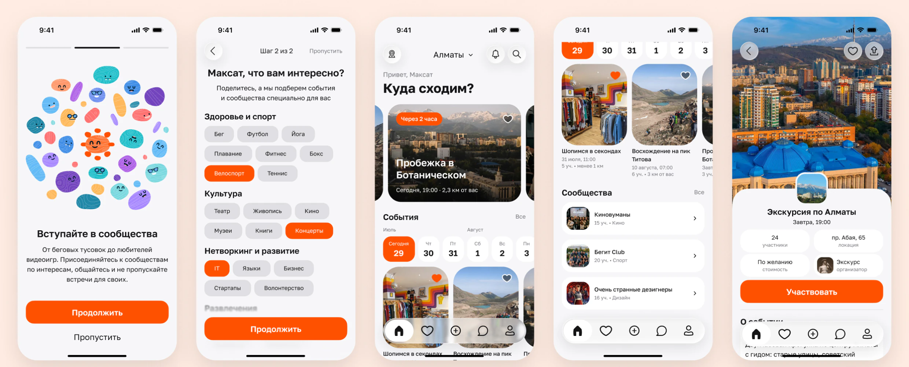
Ключевые экраны
Три экрана, на которых держится основной сценарий: найти, куда пойти, понять, что это за событие, и увидеть, кто там будет.
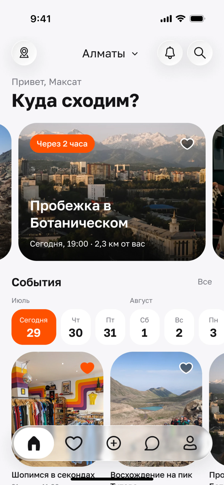
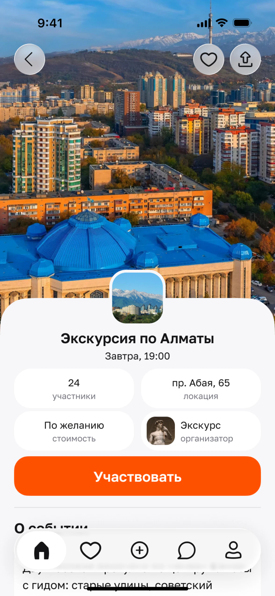
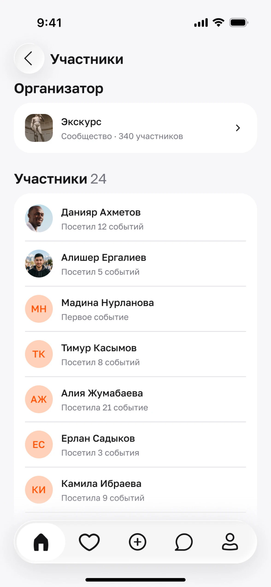
Метрики продукта
Чтобы понимать, приносит ли продукт пользу, я выбрал North Star Metric — подтверждённые посещения событий в месяц.
Почему эта метрика
Ценность Spots — встреча офлайн, а не скачивание или регистрация. Так же Airbnb считает забронированные ночи, а Zoom — состоявшиеся звонки. Установки, MAU и записи могут расти, даже когда люди перестали ходить на встречи.
Как считается
Сумма подтверждённых визитов по всем событиям за месяц: один человек на четырёх встречах — четыре посещения. Визит засчитывается, когда присутствие подтвердил организатор или обе стороны. Если статус не отметили в течение 48 часов после события, визит не учитывается.
Дерево метрик
NSM раскладывается на четыре множителя: активные пользователи за месяц × доля пользователей с записью × среднее число записей × доля записей, которые закончились визитом. Под ними — метрики интерфейса, на которые влияет дизайн: отток на онбординге, доля заполнивших интересы, ошибки при вводе почты и телефона, просмотры списка участников.
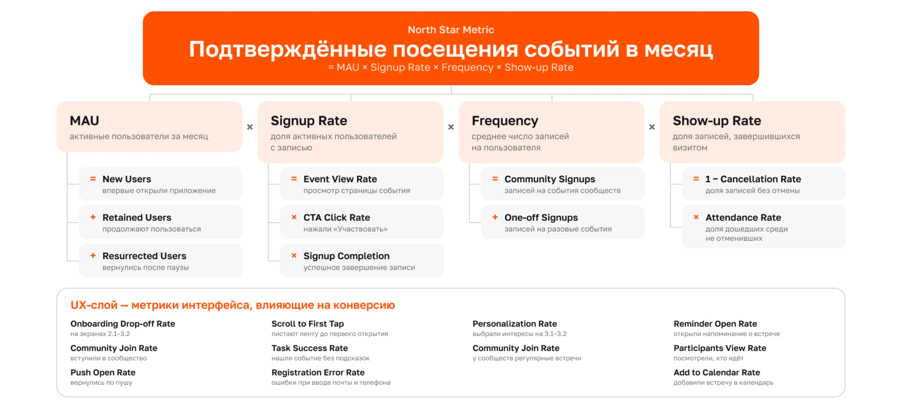
Связь экранов с метриками
Каждому шагу сценария назначил событие аналитики и метрику — от onboarding_complete до attendance_confirmed. Воронку посчитал на условных числах, чтобы показать логику: из 1000 открывших приложение до встречи доходят 125.
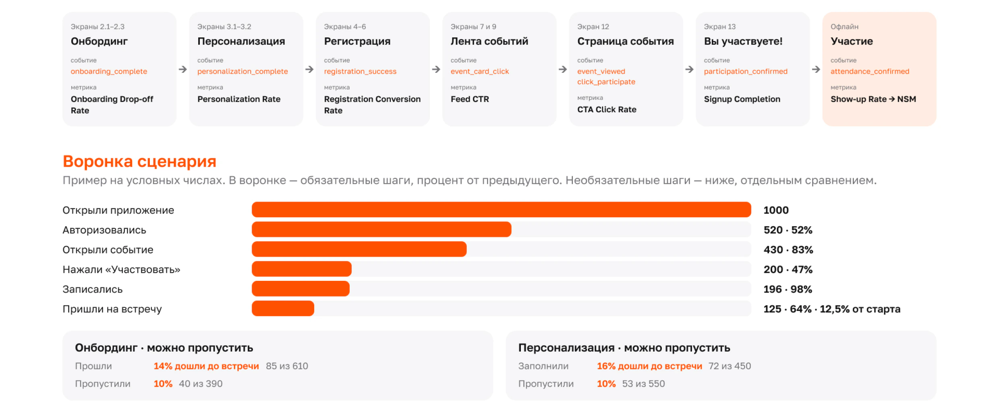
Итог
За пять месяцев я прошёл весь цикл продуктового дизайна: от исследования рынка до прототипа, теста и метрик.
- Прототип из 33 экранов с двумя сценариями.
- UI-kit: семантические переменные, 6 уровней типографики и библиотека компонентов.
- На тесте 3 из 3 респондентов приняли прототип за готовое приложение.
«Выглядит как реально готовое приложение, которое скачаешь и оставишь в телефоне, потому что полезно»
Сложности
Две сущности и несколько сценариев легко перегружают интерфейс. Решил это информационной архитектурой от общего к частному: главная отвечает только на вопрос «куда пойти», а детали и действия открываются на следующих шагах.
Что понял
Сначала конкуренты и исследование потенциальной аудитории и только потом дизайн экранов. UI-kit и переменные нужны с первого дня: они экономят часы на каждой итерации.
Что дальше
Профили участников с историей посещений, сценарий организатора, рейтинг организаторов и участников.